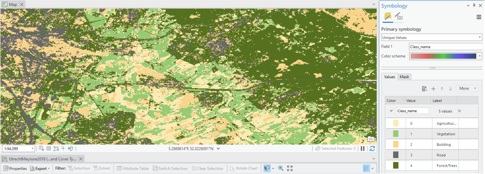
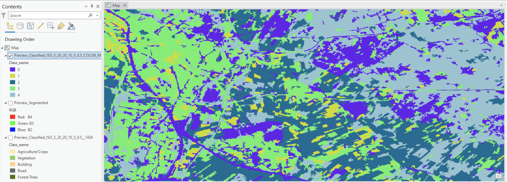
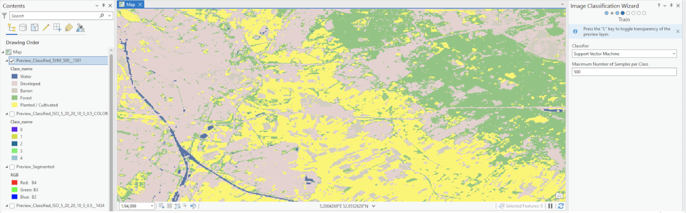
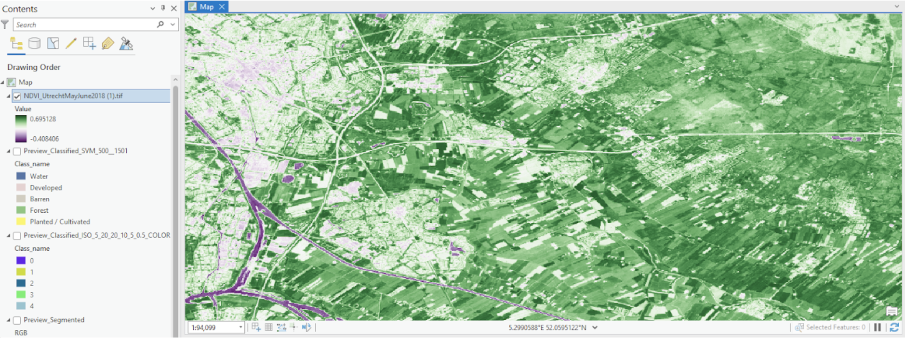

Land Cover Classification
The Assignment
The Assignment
The aim of this assignment is to gain experience in generating land cover classification maps using satellite imagery and remote sensing techniques. Given that there are countless different ways to classify land cover, this process is a key part of environmental monitoring: it allows for the observation and analysis of the Earth's surface, aiding in sustainable development, climate change mitigation, biodiversity conservation, food security, and disaster risk management. The different techniques learned include supervised pixel-based classification, unsupervised object-based classification and unsupervised pixel-based classification. The assignment also covers the normalized difference vegetation index (NDVI).
Unsupervised Pixel-Based Classification
The unsupervised pixel-based classification method uses clustering algorithms to group pixels with similar spectral properties into distinct classes without prior knowledge. This method is thus highly automated, requiring no prior training data and simplifying the process for a quick preliminary or exploratory analysis. However, it requires post-classification interpretation to assign meaningful labels and offers less control due to the lack of training data. While the unsupervised pixel-based method provides a broad overview of land cover types, it may misclassify certain areas due to spectral similarities among different land cover types. This is seen with the distribution of forests in non-forested areas around the map, caused by the very similar spectral profiles of forests and roads. This risk for misclassification makes it best suited for quick, exploratory studies where high accuracy is not the main priority.
Unsupervised Object-Based Classification
Legend:
- Class 0: Agriculture/Crops (Yellow)
- Class 1: Vegetation (Green)
- Class 2: Building (Blue)
- Class 3: Urban/Road (Purple)
- Class 4: Forest/Trees (Light Green)
The unsupervised object-based classification groups pixels into meaningful objects based on both spectral and spatial properties before classifying them. This means it considers the spatial relationship between pixels, which results in more coherent and contextually meaningful classes. Less user input is needed, making it relatively straightforward to execute. As seen on the map, this method reduces noise and the appearance of isolated pixels, creating a more homogenous map with less fragmentation than the unsupervised pixel-based classification. Overall, I found it provides a more contextually accurate classification compared to the pixel-based methods.
Supervised Pixel-Based Classification
The supervised pixel-based classification method uses user-defined training samples to classify the image based on known land cover types, achieving high accuracy. Users tend to have greater control over class definitions as well as outcomes, making it ideal for detailed analysis. It is important to note that the accuracy of the method nonetheless heavily depends on the quality and representativeness of the training data. The map illustrates the high precision of this method through the different distribution of forests in it: compared to unsupervised methods, less land cover is classified as forests in the bottom left corner, where little forest is indeed present. This method is therefore preferred when the highest accuracy is needed, and there is sufficient knowledge and resources to gather quality training data. Because of this accuracy the method was my favorite one to perform. I found it fascinating to be able to put to use my local knowledge to train the algorithm into recognizing certain land cover types.
Normalized Difference Vegetation Index (NDVI)
The Normalized Difference Vegetation Index (NDVI) is a remote sensing index used to measure and monitor vegetation health, density, and vigor. It is calculated using the visible and near-infrared (NIR) bands of the electromagnetic spectrum from satellite sensors. It is a crucial tool in environmental monitoring, enabling the protection of dense and healthy vegetation as well as the prioritization of unhealthy vegetated areas for improvement. Interestingly, the resulting map shows the healthiest vegetation (darkest shade of green) at the border of what the supervised pixel-based classification showed was forest and cultivated land. Although this was surprising at first, it actually corresponds to the "edge effect" phenomenon in ecology, where changes in population or community structures occur at the boundary of two or more habitats. Here, the edge effect may create microenvironments that support high vegetation vigor. Microenvironments could include microclimates where forest edges provide wind protection and increased humidity to adjacent cultivated land, enhancing its health. The border areas might also have reduced competition for resources compared to the dense interior of forests or cultivated fields, which allows vegetation at the edges to thrive.
Comparatively, urban areas are seen as a light shade of green, showing a decrease in vegetation health with increased urbanization. This can be explained by the lack of green spaces in urban areas, but also by their fragmentation (fragmented habitats throughout the city are less resilient to environmental stresses and therefore less capable of supporting healthy vegetation). Decreased soil quality, water stress, and higher levels of air pollutants all contribute further to a decrease in vegetation health.
Lastly, water bodies are shown as dark purple due to their very low reflectance in the near-infrared band and higher reflectance in the red band, which leads to low NDVI values overall. The presence of water indicated by the NDVI map aligns correctly with the supervised pixel-based classification.